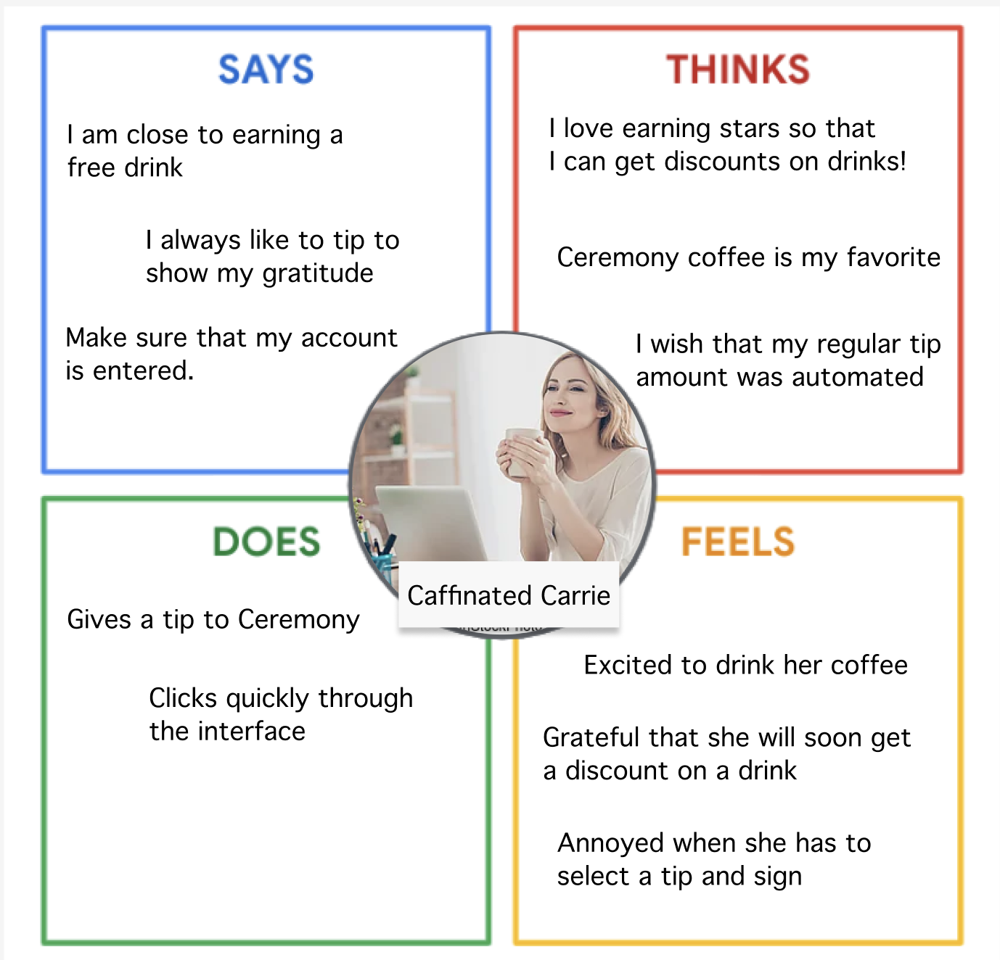
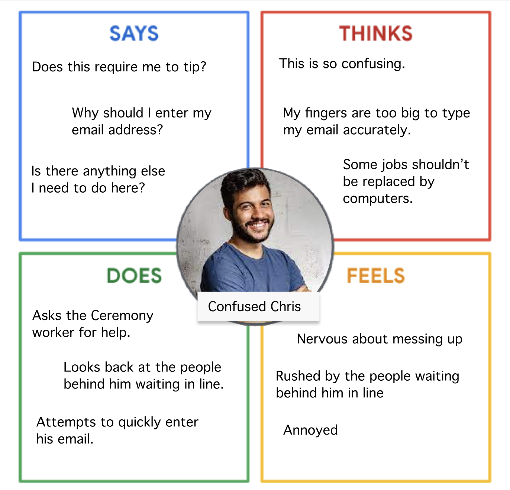

Personas
Using data and observations to create personas

Caffinated Carrie is graduate student living in Providence, Rhode Island. She has a busy schedule,
also working with a professor on an important research project. Today, she is planning on getting
some work done at Ceremony, preparing for an exam later this week.

Confused Chris is visiting Providence to give a guest lecture to the Brown Entreprenuership Nelson Center.
He has been wandering around college hill today, unsure where to find a cup of good coffee.
Chris mostly likes black coffee and is anxious about his guest lecture later today.